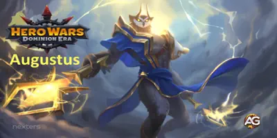
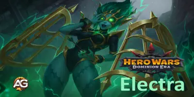
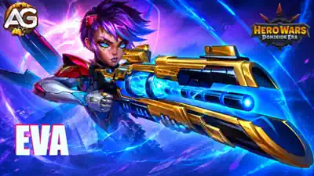
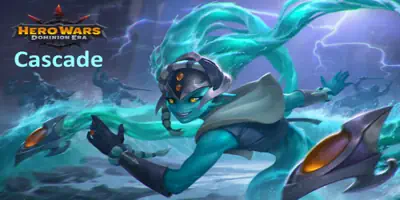
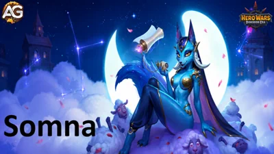

Lorsque votre équipe est sur le point de s’effondrer, Martha peut transformer une tasse de thé en une seconde chance. Dans Hero Wars: Dominion Era, elle combine soins de groupe, capacité de survie personnelle et accélération de l’équipe, ce qui aide aussi bien les héros infligeant des dégâts physiques que ceux infligeant des dégâts magiques. Je l’apprécie surtout lorsqu’une équipe a besoin de temps pour se rétablir et continuer à combattre.
La véritable question est de savoir où investir en premier. Mon approche consiste à établir sa base de soins, puis à améliorer les statistiques qui la maintiennent en vie. Ici, j’explique ses compétences, ses deux améliorations d’Ascension, ses apparences, ses glyphes, ses artefacts, ses familiers et ses choix d’équipe, avec les formules qui justifient ces priorités afin que vous puissiez adapter sa configuration à vos propres combats.


Martha est une soigneuse basée sur l’Intelligence qui combat à l’arrière. Son histoire commence avec un thé remarquable provenant des bois de Zarakkar, gardé par l’Aïeule, l’antique ancêtre de toutes les tortues terrestres. Ce don de longévité façonne l’ensemble de ses compétences : elle se soigne grâce à ses attaques de base et soutient ses alliés avec un totem de soins.

Ses soins dépendent de deux statistiques différentes. L’Attaque magique améliore le Goûter, tandis que la Santé améliore le Secret de longévité et l’Infusion curative. C’est pourquoi j’accorde une place aussi importante à la Santé dans les priorités de ses apparences.
| Statistique | Valeur | Statistique | Valeur |
|---|---|---|---|
| Intelligence |  16 208 16 208 | Agilité |  2 122 2 122 |
| Force |  5 151 5 151 | Santé |  922 177 922 177 |
| Attaque physique |  20 502 20 502 | Attaque magique |  121 512 121 512 |
| Armure |  34 962 34 962 | Défense magique |  43 049 43 049 |
| Précision |  16 208 16 208 | Résistance aux critiques |  16 208 16 208 |
| Puissance |  2 394 489 2 394 489 | ||
Attaque de base : 20 502 dégâts physiques (100 % de l’Attaque physique), avant réduction des dégâts, avec un temps de recharge de 8 secondes. L’artefact d’arme fournit +50 190 d’Armure.
Découvrez le fonctionnement des compétences de soins et de vitesse de Martha, les améliorations que je privilégie en premier et la façon dont l’Ascension renforce son soutien à mesure que votre compte progresse.
Mon ordre d’amélioration pour les débutants : Goûter → Infusion curative → Serment de l’Aïeule → Secret de longévité, à mesure que chaque compétence devient disponible. Si Martha elle-même meurt en premier, faites passer le Secret de longévité plus tôt. Les fiches ci-dessous conservent l’ordre du jeu.
Les exemples de formules utilisent le niveau de compétence 130, 922 177 de Santéet 121 512 d’Attaque magique. Les priorités des compétences de base sont indépendantes ; les déblocages d’Ascension ultérieurs sont des investissements supplémentaires.
Description en jeu : Augmente la vitesse de tous les alliés pendant 6 s.

Explication de la compétence : Il s’agit d’un bonus de vitesse pour l’équipe, et non d’une attaque infligeant des dégâts. Au niveau 130, cette compétence augmente la vitesse des alliés jusqu’à 250 % pendant 6 secondes. Je l’apprécie parce qu’elle aide toute l’équipe à agir plus vite, que votre principal héros offensif inflige des dégâts physiques ou magiques. Cette valeur de vitesse ne doit pas être interprétée comme une augmentation garantie de 250 % des dégâts totaux de l’équipe.
Formule : Augmente la vitesse des alliés jusqu’à 250 % (1 * niveau + 120)
Informations sur l’animation de la compétence
Priorité d’évolution : Moyenne à élevée — 3e — Je développe d’abord les compétences de soins, puis je renforce l’accélération de l’équipe. Elle devient particulièrement précieuse lorsque l’équipe peut survivre assez longtemps pour profiter de ces actions plus rapides.
Description en jeu : Les attaques de base de Martha la soignent lorsqu’un projectile touche un ennemi. Plus le projectile parcourt de distance, plus il restaure de santé.

Explication de la compétence : Martha se soigne lorsque le projectile de son attaque de base atteint un ennemi. Un trajet plus long procure davantage de soins, jusqu’à 273 322 de Santé par projectile avec ces statistiques. L’attaque elle-même inflige des dégâts physiques ; la compétence passive ajoute des soins pour Martha. Cela explique l’importance de sa position à l’arrière et pourquoi être attirée vers l’avant peut affaiblir sa récupération.
Formule : Un projectile peut restaurer jusqu’à 273 322 (24 % de la santé + 400 * niveau) de santé
Priorité d’évolution : Moyenne — 4e — Cette compétence aide directement Martha plutôt que de soigner toute l’équipe. Améliorez-la plus tôt lorsque la pression sur l’arrière-garde la tue ; sinon, établissez d’abord ses soins d’équipe.
Description en jeu : Invoque devant le personnage un totem qui restaure la santé des alliés. Les ennemis ne peuvent pas cibler le totem, mais il peut subir des dégâts de zone.

Explication de la compétence : Le totem est la base des soins de groupe de Martha. Sa valeur de soins indiquée est de 105 407 pour chaque allié, sur une durée de 8 secondes. Il s’agit d’un effet de soins, et non de dégâts magiques, même s’il dépend de l’Attaque magique. Les ennemis ne peuvent pas sélectionner le totem comme cible, mais les attaques de zone peuvent tout de même le toucher et le détruire. Lorsque cela se produit, votre équipe perd les soins sur lesquels elle comptait.
Formule : Régénération de santé pour chaque allié : 105 407 (60 % de l’attaque magique + 250 * niveau) pendant 8 s
Informations sur l’animation de la compétence
Priorité d’évolution : Très élevée — 1re — Cette compétence soigne toute l’équipe et permet le fonctionnement de l’Infusion curative. Elle mérite la première priorité même avant que l’Ascension soit disponible, car le totem de base est déjà essentiel à son rôle.
Description en jeu — Grade 3 : Tant que le Totem est actif, il augmente la vitesse de tous les alliés de 20 % (20). Le Totem peut subir jusqu’à 3 (3) coups avant d’être détruit.

Explication de la compétence : Avant l’Ascension, le Goûter fournit des soins. Herbes revigorantes ajoute un bonus de vitesse à l’équipe tant que le totem est actif : 10 % au grade 0, 15 % au grade 1 et 20 % aux grades 2 et 3. Le grade 3 permet également au totem de subir jusqu’à 3 coups avant sa destruction. Je considère cette dernière étape comme une protection précieuse pour la source de ses deux soins basés sur le totem.
| Grade | Description en jeu | Coût d’amélioration |
|---|---|---|
| 0 | Tant que le Totem est actif, il augmente la vitesse de tous les alliés de 10 % (10). | Déblocage initial de la compétence d’Ascension |
| 1 | Tant que le Totem est actif, il augmente la vitesse de tous les alliés de 15 % (15). | 200 de Poussière d’Ascension + 1 450 000 d’Or |
| 2 | Tant que le Totem est actif, il augmente la vitesse de tous les alliés de 20 % (20). | 300 de Poussière d’Ascension + 2 900 000 d’Or |
| 3 | Tant que le Totem est actif, il augmente la vitesse de tous les alliés de 20 % (20). Le Totem peut subir jusqu’à 3 (3) coups avant d’être détruit. | 750 de Poussière d’Ascension + 4 350 000 d’Or |
Ma priorité d’Ascension : Atteignez l’Ascension II avant de prévoir l’investissement dans l’Ascension V, qui arrive bien plus tard. Le bonus de vitesse et la résistance du grade 3 améliorent une compétence dont vous dépendez déjà. Les grades 1–3 coûtent au total 1 250 de Poussière d’Ascension et 8 700 000 d’Or, en plus de ce qui est nécessaire pour atteindre le déblocage.
Description en jeu : Tant que le totem est actif, l’allié ayant le moins de santé reçoit désormais des soins supplémentaires.

Explication de la compétence : Tant que le totem du Goûter est actif, l’allié ayant le moins de santé reçoit des soins supplémentaires de 180 327 de Santé par seconde pendant 8 secondes. Il s’agit de soins ciblés, et non de dégâts. Ils aident l’allié qui en a le plus besoin tandis que le Goûter soutient tout le monde. Les soins supplémentaires dépendent du maintien du totem, ils ne peuvent donc pas remplacer le Goûter.
Formule : Régénération de santé par seconde : 180 327 (15 % de la santé + 400 * niveau - 10 000) pendant 8 s
Informations sur l’animation de la compétence
Priorité d’évolution : Élevée — 2e — Une fois débloquée, cette compétence renforce sa capacité à sauver un allié blessé. Je la place après le Goûter parce qu’elle ne fonctionne que lorsque le totem de cette compétence est actif.
Description en jeu — Grade 3 : Tant que Martha possède plus de 50 % (50) de Santé, 20 % (20) des dégâts subis par les deux alliés les plus proches lui sont transférés.

Explication de la compétence : L’Infusion curative aide déjà un allié blessé ; la Protection de la tortue ajoute un partage des dégâts. Tant que Martha possède plus de 50 % de Santé, elle reçoit 10 %, 15 % ou 20 % des dégâts subis par l’allié le plus proche, selon le grade. Au grade 3, le transfert de 20 % s’applique aux deux alliés les plus proches. Les dégâts sont transférés à Martha, sa propre survie reste donc importante. À 50 % de Santé ou moins, la condition d’activation indiquée n’est plus remplie.
| Grade | Description en jeu | Coût d’amélioration |
|---|---|---|
| 0 | Tant que Martha possède plus de 50 % (50) de Santé, 10 % (10) des dégâts subis par l’allié le plus proche lui sont transférés. | Déblocage initial de la compétence d’Ascension |
| 1 | Tant que Martha possède plus de 50 % (50) de Santé, 15 % (15) des dégâts subis par l’allié le plus proche lui sont transférés. | 200 Éclats d’Ascension + 1 750 000 d’Or |
| 2 | Tant que Martha possède plus de 50 % (50) de Santé, 20 % (20) des dégâts subis par l’allié le plus proche lui sont transférés. | 300 Éclats d’Ascension + 3 500 000 d’Or |
| 3 | Tant que Martha possède plus de 50 % (50) de Santé, 20 % (20) des dégâts subis par les deux alliés les plus proches lui sont transférés. | 750 Éclats d’Ascension + 5 250 000 d’Or |
Ma priorité d’Ascension : Considérez cela comme un investissement défensif ultérieur, une fois ses soins de base et sa survie établis. Cette compétence protège les alliés proches, mais accroît également la pression sur Martha. Les grades 1–3 coûtent au total 1 250 Éclats d’Ascension et 10 500 000 d’Or, en plus de ce qui est nécessaire pour atteindre le déblocage.
Choisissez les apparences de Martha en fonction des soins dont vous avez le plus besoin : la Santé renforce deux compétences, l’Armure l’aide à survivre et l’Attaque magique améliore le Goûter.
Ma priorité d’apparences pour Martha : Solaire ou Céleste → l’autre apparence de Santé → Hivernale → Par défaut → Mascarade. Solaire et Céleste offrent exactement le même bonus et ont le même coût de progression, alors commencez par celle que vous possédez. Faites passer Hivernale plus tôt si les dégâts physiques tuent Martha ; faites passer Mascarade plus tôt si elle survit déjà sans difficulté et que votre principal problème concerne les soins de groupe.
Tous les bonus d’apparence se cumulent, quelle que soit l’apparence équipée. Vous n’avez pas besoin de porter une apparence de Santé pour recevoir son bonus de Santé amélioré. Les fiches ci-dessous conservent leur ordre d’origine.
Gain de statistiques : Intelligence +1 365
Chaque point d’Intelligence donne 3 d’Attaque magique et 1 de Défense magique, ainsi que 1 d’Attaque physique, car l’Intelligence est la statistique principale de Martha.
L’Attaque magique supplémentaire ajoute 2 457 à la formule du Goûter : 60 % × 4 095. L’Attaque physique est un avantage secondaire pour une héroïne dont le rôle principal est de soigner.
Priorité d’évolution : Moyenne — après la Santé et l’Armure — L’Intelligence offre une combinaison utile de soins et de défense magique pour un coût total en pierres inférieur. Je la place après la base défensive ; un budget plus restreint peut justifier de développer plus tôt cette apparence moins chère.
Total de Pierres d’apparence d’Intelligence pour le niveau maximal :  30 825.
30 825.
Gain de statistiques : Armure +10 665
C’est le choix défensif contre les dégâts physiques. Son intérêt est de maintenir Martha en vie afin qu’elle puisse continuer à fournir ses soins et son soutien en vitesse.
Priorité d’évolution : Élevée — après les deux apparences de Santé — L’Armure aide Martha à supporter la pression physique, mais n’augmente pas directement ses formules de soins. Faites passer cette apparence avant la seconde apparence de Santé si les attaquants physiques sont la raison de sa mort.
Total de Pierres d’apparence d’Intelligence pour le niveau maximal :  58 412.
58 412.
Gain de statistiques : Santé +106 645
Ce bonus ajoute environ 25 595 aux soins personnels maximaux du Secret de longévité (24 % × 106 645) et 15 997 par seconde à l’Infusion curative (15 % × 106 645), avant les effets temporaires. Il donne également davantage de Santé à Martha pour absorber les dégâts lorsque la Protection de la tortue est débloquée.
Priorité d’évolution : Très élevée — 1re ex æquo avec Céleste — La Santé améliore simultanément la survie de Martha et deux compétences de soins. C’est mon premier investissement à usage général, avec la même priorité que Céleste.
Total de Pierres d’apparence d’Intelligence pour le niveau maximal :  55 410.
55 410.
Gain de statistiques : Attaque magique +10 650
Les +10 650 d’Attaque magique ajoutent 6 390 à la formule de soins du Goûter : 60 % × 10 650. C’est une augmentation directe du Goûter plus importante que celle de l’Apparence par défaut, même si elle n’apporte ni Santé ni Armure supplémentaires.
Priorité d’évolution : Moyenne — amélioration des soins selon la situation — Cette apparence améliore directement les soins de groupe, mais n’augmente pas les soins basés sur la Santé du Secret de longévité ou de l’Infusion curative. Faites-la passer avant les apparences défensives lorsque Martha est en sécurité et que le Goûter doit fournir davantage de soins.
Total de Pierres d’apparence d’Intelligence pour le niveau maximal :  55 410.
55 410.
Gain de statistiques : Santé +106 645
Ce bonus ajoute environ 25 595 aux soins personnels maximaux du Secret de longévité (24 % × 106 645) et 15 997 par seconde à l’Infusion curative (15 % × 106 645), avant les effets temporaires. Il donne également davantage de Santé à Martha pour absorber les dégâts lorsque la Protection de la tortue est débloquée.
Priorité d’évolution : Très élevée — 1re ex æquo avec Solaire — Elle offre exactement la même Santé et le même coût de progression que Solaire. Choisissez d’abord celle qui est disponible, puis développez l’autre pour cumuler une seconde fois le même bonus.
Total de Pierres d’apparence d’Intelligence pour le niveau maximal :  55 410.
55 410.
Développez les glyphes de Martha autour de soins fiables et de la survie, puis adaptez les améliorations défensives aux ennemis qui exercent le plus de pression sur votre équipe.
Mon ordre général pour les glyphes : Santé → Armure → Intelligence → Attaque magique → Défense magique. Faites passer la Défense magique avant l’Armure face à la pression magique, ou l’Attaque magique avant les améliorations défensives lorsque Martha survit déjà sans difficulté. Les fiches conservent l’ordre du jeu.
Gain de statistiques : Attaque magique +6 500
Les +6 500 d’Attaque magique ajoutent 3 900 à la formule de soins du Goûter (60 % × 6 500). Cela améliore les soins de toute l’équipe, mais pas les deux soins basés sur la Santé.
Priorité d’évolution : Moyenne à élevée — 4e — Je donne d’abord la priorité à la survie de Martha. Faites passer ce glyphe plus tôt lorsqu’elle est en sécurité et que toute l’équipe a besoin de soins plus puissants du totem.
Gain de statistiques : Santé +62 200
Les +62 200 de Santé ajoutent 14 928 aux soins maximaux du Secret de longévité et 9 330 par seconde à l’Infusion curative. Ils offrent également une plus grande réserve pour les dégâts transférés par la Protection de la tortue.
Priorité d’évolution : Très élevée — 1re — Cette seule amélioration renforce la survie et deux compétences de soins, ce qui en fait mon meilleur point de départ général.
Gain de statistiques : Défense magique +6 500
La Défense magique réduit les dégâts magiques reçus. Elle n’augmente pas directement les soins de Martha.
Priorité d’évolution : Moyenne — 5e par défaut — Gardez-la pour plus tard lorsque les dégâts physiques sont la principale menace, mais faites-la passer avant l’Armure contre les équipes à dégâts magiques.
Gain de statistiques : Armure +6 500
L’Armure aide Martha à survivre aux attaques physiques visant l’arrière-garde. Contrairement à la Santé, elle n’augmente directement aucune formule de soins.
Priorité d’évolution : Élevée — 2e — Une soigneuse morte ne peut pas soutenir l’équipe. Je développe ce glyphe tôt lorsque la pression physique menace Martha avant qu’elle puisse se rétablir.
Gain de statistiques : Intelligence +1 135
+3 405 d’Attaque magique, +1 135 de Défense magiqueet +1 135 d’Attaque physique proviennent de ce bonus à la statistique principale. L’Attaque magique ajoute 2 043 à la formule de soins du Goûter.
Priorité d’évolution : Moyenne à élevée — 3e — J’apprécie son mélange de soins et de défense magique après la base de Santé et d’Armure. Si seule la quantité de soins compte, le glyphe d’Attaque magique est plus avantageux.
Choisissez les artefacts de Martha selon leur effet sur la survie : le livre renforce les soins, la théière fournit de l’Armure et l’anneau améliore sa statistique principale.
Mon ordre pour les artefacts : Tome du savoir arcanique → Théière de Zarakkar → Anneau d’Intelligence. Faites passer l’arme plus tôt lorsque l’équipe a un besoin urgent de protection contre les dégâts physiques. L’arme, le livre et l’anneau utilisent des matériaux de progression différents ; cet ordre est donc surtout utile pour décider où affecter les ressources communes.

Gain de statistiques : Armure +50 190
Lorsque le Serment de l’Aïeule active l’artefact d’arme, l’équipe reçoit son bonus d’Armure pendant 9 secondes. Le bonus maximal affiché est de +50 190 d’Armure. Il s’agit d’un bonus temporaire pour l’équipe, et non d’Armure permanente ajoutée à Martha.
Priorité d’évolution : Élevée — 2e — Cet artefact protège toute l’équipe contre les dégâts physiques. Il peut devenir ma première priorité dans ce type d’affrontement, et l’Énergie supplémentaire de Robin aide Martha à atteindre l’ultime qui le déclenche.

Gain de statistiques : Santé +83 649
Gain de statistiques : Attaque magique +16 731
Le livre ajoute environ 20 076 aux soins maximaux du Secret de longévité, 12 547 par seconde à l’Infusion curative et 10 039 à la formule du Goûter. Ces augmentations proviennent de 24 % et 15 % de sa Santé, ainsi que de 60 % de son Attaque magique.
Priorité d’évolution : Très élevée — 1re — Il renforce les trois compétences de soins tout en rendant Martha plus difficile à tuer. Cet avantage étendu explique pourquoi je commence ici pour une configuration générale.

Gain de statistiques : Intelligence +6 249
L’Intelligence fournit +18 747 d’Attaque magique, +6 249 de Défense magiqueet +6 249 d’Attaque physique. Elle ajoute environ 11 248 à la formule du Goûter (60 % × 18 747).
Priorité d’évolution : Moyenne à élevée — 3e — Cet artefact offre la plus grande augmentation directe du Goûter parmi les deux artefacts permanents, mais le livre améliore aussi les soins basés sur la Santé et l’arme protège les alliés. Améliorez l’anneau plus tôt si votre besoin principal est de renforcer les soins de groupe.
Choisissez le familier protecteur de Martha selon le problème à résoudre : Robin favorise le gain d’Énergie, Oliver ajoute de la résistance et Axel l’aide à supporter les coups puissants.
Mon classement général : Robin → Oliver → Axel. Ce sont les trois familiers protecteurs compatibles. Cet ordre suppose que Martha survive assez longtemps pour soutenir l’équipe ; face à des dégâts explosifs mortels, Axel peut devenir le meilleur choix.
Vent favorable donne à Martha environ 75,01 d’Énergie supplémentaire toutes les 5 secondes à la puissance maximale de patronage indiquée. Robin fournit également +99 576 de Santé et +9 958 de Défense magique. Je le place en premier parce que la Santé renforce ses deux soins basés sur la Santé, tandis que l’Énergie l’aide à utiliser plus souvent le Serment de l’Aïeule et son bonus d’Armure d’artefact. Son ultime accorde de la vitesse ; il n’invoque pas directement le totem du Goûter.
Oliver fournit de la Santé et de l’Armure, une combinaison utile lorsque Martha doit survivre à la pression physique. Floraison éternelle fournit des soins de patronage, avec une valeur maximale indiquée de 11 064 toutes les 0,5 seconde lorsque son effet est actif. Je le privilégie lorsque la résistance de Martha elle-même pose problème, particulièrement lorsque la Protection de la tortue ajoute des dégâts transférés. Référence des compétences d’Oliver.
Axel fournit de l’Attaque magique et de l’Armure. Son patronage Bulle défensive limite les dégâts d’une attaque individuelle à environ 45 % de la Santé maximale de son propriétaire à la puissance maximale de patronage. Choisissez-le plus tôt si de gros coups individuels tuent Martha avant qu’elle puisse se rétablir. L’Attaque magique améliore également le Goûter. Cette protection n’est pas le bouclier de partage des dégâts de l’équipe fourni par la compétence active d’Axel. Référence des compétences d’Axel.
Le patronage et le familier principal sont des choix distincts. Robin peut protéger Martha tandis qu’Axel est choisi comme familier principal de l’équipe. Seul le familier principal sélectionné fournit ses compétences actives de combat ; attribuer un familier protecteur ne donne pas ces compétences actives à Martha.

▶ Regardez cette vid?o sur YouTube
L’approche la plus efficace consiste à interrompre les soins dont votre adversaire a besoin : réduire les soins reçus, détruire le totem ou perturber la position de Martha.
Les options ci-dessous sont classées par ordre alphabétique. Leur valeur dépend des alliés que leurs compétences atteignent réellement ; ajouter un contre ne garantit pas la victoire.
Tempête glaciale empêche les ennemis affectés de recevoir des soins d’autres personnages pendant 5 secondes, ce qui interrompt les soins que Martha apporte à ses coéquipiers. Les soins personnels constituent une exception. Séparément, le patronage de Biscuit permet aux attaques de son propriétaire de réduire les soins reçus par la cible pendant 5 secondes. C’est utile contre une équipe qui compte sur Martha pour se rétablir entre les attaques. Référence des compétences de Biscuit.
Flamme maudite bloque les soins sur les ennemis affectés, et Limbes convertit une partie de ces soins bloqués en dégâts magiques. Plutôt que d’essayer d’infliger plus de dégâts que chaque soin ne peut en compenser, Celeste crée une fenêtre pendant laquelle Martha ne peut pas rétablir normalement l’allié affecté. La position et la zone couverte par la flamme comptent. Référence des compétences de Celeste.
Crochet rouillé attire un ennemi éloigné vers Cleaver. Lorsque Martha est la cible, elle perd sa position protégée à l’arrière et doit faire face aux menaces proches. La distance plus courte parcourue par ses attaques réduit également les soins personnels décrits par le Secret de longévité. Sa Santé élevée n’empêche pas le déplacement. Référence des compétences de Cleaver.
Potion de fatigue empêche les ennemis proches affectés de régénérer leur Santé pendant 8 secondes. Jet peut donc priver les alliés qu’il touche des soins de Martha sans avoir besoin d’atteindre Martha elle-même. L’effet se limite aux cibles affectées au lieu de neutraliser automatiquement toute l’équipe. Référence des compétences de Jet.
Toxine inconnue bloque une partie de chaque soin reçu par les ennemis affectés par le poison de Yasmine. Cela complique le sauvetage d’un allié empoisonné par Martha. Il s’agit d’une réduction partielle des soins, et non d’une interdiction universelle de se soigner, et Yasmine doit d’abord appliquer son poison. Référence des compétences de Yasmine.
Surveillez aussi le totem. Les attaques de zone peuvent le détruire même si les ennemis ne peuvent pas le cibler directement. Avec Herbes revigorantes au grade 3, il peut subir jusqu’à trois coups ; il ne faut donc pas supposer qu’un seul coup de zone élimine un totem entièrement amélioré. La perte du totem interrompt à la fois le Goûter et l’Infusion curative.
Choisissez un Drapeau de guerre qui résout le problème de l’équipe : Récupération renforce les soins, Préparation aide le héros le plus en retrait et Bastion protège contre les attaques.

Mon premier choix pour des soins continus.
Effet : Augmente tous les soins de 10 %.
Bénéfice pour Martha et l’équipe : Ce drapeau soutient directement le rôle de soigneuse de Martha. Je commence ici lorsque l’équipe survit au début du combat et a besoin d’une récupération plus puissante pendant toute la bataille. Un bonus de soins ne supprime pas un effet ennemi de blocage des soins.

Pour des ultimes plus fréquents à l’arrière.
Effet : Donne 100 d’Énergie au héros le plus en retrait au début et toutes les 20 secondes. Chaque motif rouge ajoute 20 d’Énergie.
Bénéfice pour Martha et l’équipe : Martha est une héroïne de l’arrière-garde, mais elle ne reçoit l’Énergie que si elle est réellement l’héroïne la plus en retrait de cette formation. Si c’est le cas, cela l’aide à activer le Serment de l’Aïeule et le bonus d’Armure de l’artefact. Si un autre héros se tient derrière elle, c’est lui qui reçoit le bénéfice.

Pour survivre à la pression physique initiale.
Effet : Au début, ajoute une Armure égale à 30 % de l’Armure du héros en première position; cette valeur diminue jusqu’à 5 % sur 20 secondes. Chaque motif rouge prolonge l’effet de 3 secondes.
Bénéfice pour Martha et l’équipe : Choisissez-le lorsque les dégâts physiques submergent l’équipe avant que Martha puisse stabiliser le combat. Sa puissance dépend de l’Armure du héros en première position, c’est donc un choix de composition d’équipe plutôt qu’un bonus basé sur l’Armure propre de Martha.
Ces trois formations montrent comment j’utiliserais Martha avec du contrôle, des attaquants physiques et des dégâts magiques. Commencez par l’équipe qui correspond aux héros que vous avez déjà développés.
Les attributions de patronage ci-dessous correspondent aux trois formations recommandées. Axel comme familier principal et Récupération comme Drapeau de guerre sont les choix de départ que je suggère pour chaque équipe. Le bouclier actif d’Axel répartit les dégâts physiques et magiques entre les alliés selon leur Santé restante, ce qui donne davantage de dégâts à compenser aux soins de groupe de Martha. Compétences actives d’Axel.
Lisez les colonnes des héros de l’arrière à gauche vers l’avant à droite. Le familier situé directement au-dessus de chaque héros est son protecteur ; la première colonne identifie séparément le familier principal et le Drapeau de guerre.
Le sommeil et la réduction d’attaque de Somna aident à donner du répit, tandis que Fluffy et Cascade exercent une pression offensive. Cascade réduit également les soins ennemis pendant son ultime. Electra tient l’avant, et Martha permet à l’équipe de se rétablir derrière elle. J’apprécie Martha ici parce que les soins et la vitesse soutiennent tous deux une formation dont la première ligne doit tenir.
| Familier principal / Drapeau de guerre | Arrière | Héros 4 | Héros 3 | Héros 2 | Avant |
|---|---|---|---|---|---|
Ce que je vérifierais en combat : Observez si Electra survit entre ses compétences défensives et si le totem de Martha reste actif. Le sommeil de Somna peut prendre fin prématurément après suffisamment de dégâts ; ce n’est donc pas une fenêtre garantie de contrôle ininterrompu.
Eva et Adam interagissent avec les Marques du chasseur, tandis qu’Astrid et Lucas ajoutent une autre source de pression et une présence invoquée en première ligne. Julius soutient l’avant, et Martha fournit des soins continus et un bonus de vitesse qui aide les attaquants à continuer d’agir. C’est mon option à dégâts physiques parmi les trois formations.
| Familier principal / Drapeau de guerre | Arrière | Héros 4 | Héros 3 | Héros 2 | Avant |
|---|---|---|---|---|---|
Ce que je vérifierais en combat : Martha ne supprime pas les blocages de soins ennemis. Si l’équipe tombe dès le début, améliorez la défense de première ligne ou envisagez Bastion avant de simplement ajouter davantage de soins.
Lars et Krista forment le noyau des dégâts magiques, avec Jorgen en soutien et Electra pour tenir l’avant. Le rôle de Martha est de maintenir ce noyau en vie au fil des échanges répétés et d’accélérer l’équipe lorsque le Serment de l’Aïeule devient disponible. La formation lui donne une tâche claire : soutenir les alliés qui fournissent ses dégâts.
| Familier principal / Drapeau de guerre | Arrière | Héros 4 | Héros 3 | Héros 2 | Avant |
|---|---|---|---|---|---|
Ce que je vérifierais en combat : Surveillez la réduction des soins par l’ennemi et les dégâts de zone autour du totem de Martha. L’Ascension II améliore la résistance du totem, mais la composition doit tout de même survivre lorsque les soins sont interrompus.
Je recommande Martha lorsque votre équipe a besoin de soins continus et d’un bonus de vitesse qui soutient ses héros offensifs. La meilleure façon d’investir en elle commence par une question simple : est-ce elle qui meurt, ou l’équipe qui n’arrive pas à se rétablir ?
Si Martha meurt, privilégiez la Santé et la défense pertinente, et reconsidérez son familier protecteur. Si elle survit mais que ses alliés continuent de tomber, améliorez le Goûter, l’Infusion curative et les statistiques qui alimentent ces formules. Développez d’abord ses compétences de base, puis utilisez Herbes revigorantes pour améliorer le totem et Protection de la tortue pour protéger les alliés proches.
Pour une configuration générale, mon point de départ est des améliorations axées sur la Santé, le Tome du savoir arcanique, le patronage de Robin et le Drapeau de guerre de récupération. Adaptez ces choix à l’adversaire. Une Martha résistante avec un totem protégé peut permettre à une équipe de continuer à combattre ; une valeur de soins plus élevée ne suffira pas à résoudre un déplacement, la destruction du totem ou la réduction des soins.




